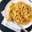

<div class="popular-recipes-main-container">
    <div class="popular-recipes-content-div">
        <h2 class="popular-recipes-section-header">POPULAR RECIPES</h2>
        <!-- Unit element that will be mapped with JS -->
        <!-- Number of elements will be arranged by JS -->

        <!-- MAP ELEMENT START -->
        <div class="pop-recipe-unit-div">
            
            <div class="pop-recipe-header-n-text-div">
                <h3 class="popular-recipe-title">FRENCH...</h3>
                <p class="popular-recipe-text">A French omelette is a simple yet elegant dish made with whisked egg..</p>
            </div>
        </div>
        <!-- MAP ELEMENT END -->

        <!-- Unit element that will be mapped with JS -->
         <!-- MAP ELEMENT START -->
        <div class="pop-recipe-unit-div">
            <div class="popular-recipes-image-div">
                
            </div>
            <div class="pop-recipe-header-n-text-div">
                <h3 class="popular-recipe-title">SQUASH...</h3>
                <p class="popular-recipe-text">Squash linguine is a flavorful and nutritious pasta alternative made..</p>
            </div>
        </div>
        <!-- MAP ELEMENT END -->
    </div>
</div>